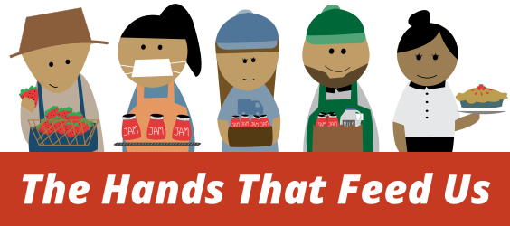

It is not only important to know where your food comes from, but who your food comes from.
The purpose of this app is to increase the public’s understanding of the food chain, how it affects workers and why it matters.
By learning the context and stories of food chain, consumers and policymakers can make better decisions and take action to support the workers in the chain—the hands that feed us.